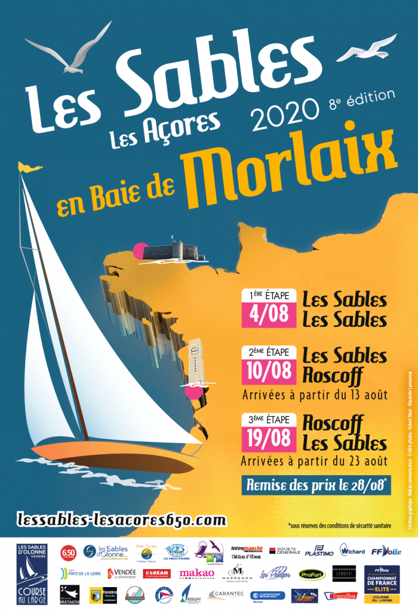

Le calendrier des courses !
2020, circuit Atlantique :
-
LES SABLES - LES ACORES EN BAIE DE MORLAIX

1 - 28 aoutEtape 1 : Les Sables - Les Sables (197 milles)
Etape 2 : Les Sables - Roscoff (470 milles)
Etape 3 : Roscoff - Les Sables d'Olonne (866 milles) -
MINI EN MAI
8 - 12 septembreDépart et arrivée à La Trinité Sur Mer
Baie de Quiberon - Bretagne Sud - Mer d'Iroise - Estuaire de la Gironde - Baie de Quiberon -
DUO CONCARNEAU - CHALLENGE BFR MARÉE HAUTE 2020
24 - 27 septembreDépart et arrivée à Concarneau
Zone de course : Mer d'Iroise et Bretagne Sud -
TROPHEE MARIE-AGNES PERON 2020
15 - 17 octobreDouarnenez - Mer d'Iroise - Bretagne Sud - Douarnenez
3ème étape du Championnat de France Course au Large en Solitaire 2020